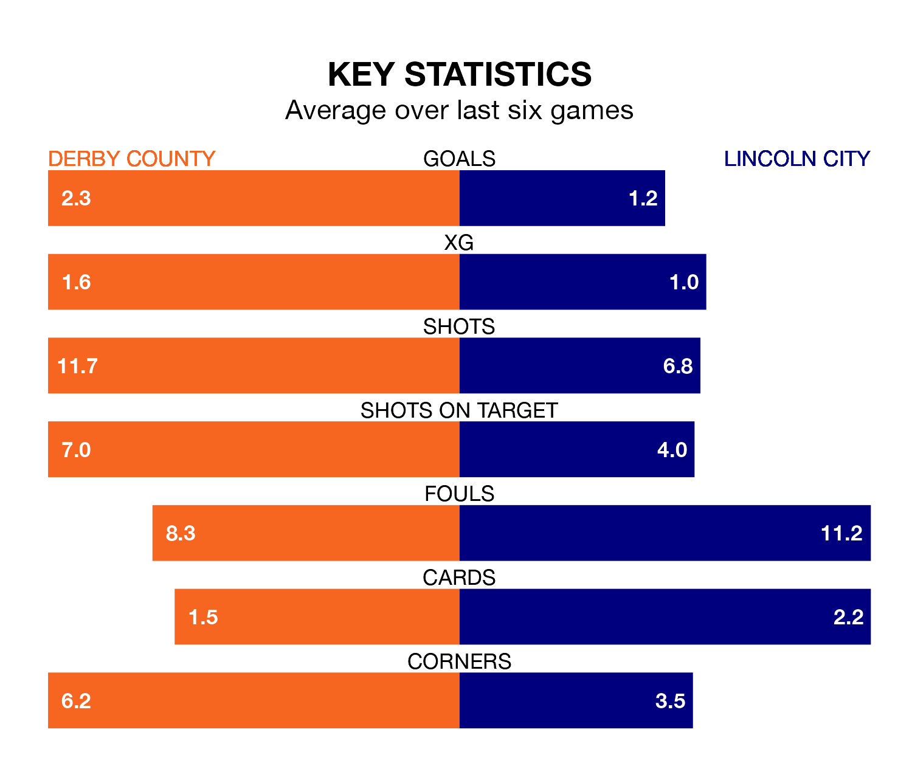

Two of EFL League One's meanest defences go head-to-head at Pride Park Stadium on Thursday, when Derby County host Lincoln City.
Only one side – Portsmouth – has conceded fewer goals than Derby to date: the home side have let in just 17 goals in 20 games.
The Imps have conceded 21 goals in 22 games, giving them the joint-fourth tightest back line so far this season.
Key to the Rams's home form has been Joe Wildsmith, who has allowed 0.67 goals past him per 90 minutes, compared to 0.86 for Lukas Jensen in the opposite net.
Derby are in fantastic form in EFL League One, with five wins and a draw from their last six games.
With two wins and three draws over that period, Lincoln's form is much worse – they have taken nine points from 18, compared to County's 16.
The Rams's Nathaniel Mendez-Laing is the league's most creative player, racking up six assists in 20 appearances so far this season.
For City, Lasse Sørensen has set up the most goals, having laid on four assists in 20 games.
The hosts are sixth in the table after 20 games, of which they have won 11 and drawn four, earning 37 points.
The Imps are three places behind Derby in ninth, with eight wins and eight draws putting them on 32 points.
Derby's last match was on Saturday, a 1-1 draw against Wycombe Wanderers, with Tom Barkhuizen getting the goal for the Rams.
Lincoln drew 1-1 with Reading last time out, also on Saturday, with Nelson Abby on the scoresheet.
Thursday's match will be refereed by Peter Wright, who has taken charge of five EFL League One games so far this season, issuing one red card and booking 15 players. He has awarded three penalties.
The last Derby game Wright refereed was a 1-1 away draw with Cheltenham Town on October 7. He is yet to oversee a match featuring Lincoln this season.
Updated: 15:16, 21/12/23